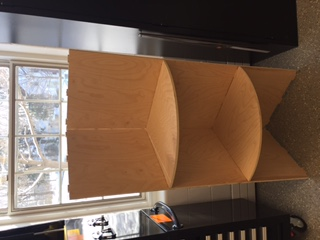

Week 2
This week we are doing CAD designs for furnitures. My goal is to CAM out a book case of my own design. I used Fusion 360 first to design the book case. The basic idea is to have tabs along the edges so as to fit the components together. I designed the tabs to be 10mm by 25mm. The shape of the book case would be a quarter-circle so that it can stand at a corner in my room. I originally planned on to CAM out the job in Fusion 360, but the procedure and the data I needed to put it was too much. Thus I exported the sketches into VCarve as .dxf files and CAM them out there.
However, soon after I exported the sketches I realized a fatal error of my design---ShopBot cannot cut in 3D. The only action it can perform is 2D cutting and engraving. Thus, the tabs must be of the same width as the thickness of the material. I went back to my Fusion 360 file and changed the sketches.
The Fusion file is here.
Next I chose the quarter inch ball nose as my drilling bit and routed the job. Due to the size of the medium, I had to use two pieces of plywood.
The files for the design is here and here.
The files for machining is here and here.
The final product is here.
After I used the nail gun to fix the book shelf, here is the result.

Although I have to use excessively the jig saw and many other stuff, I do